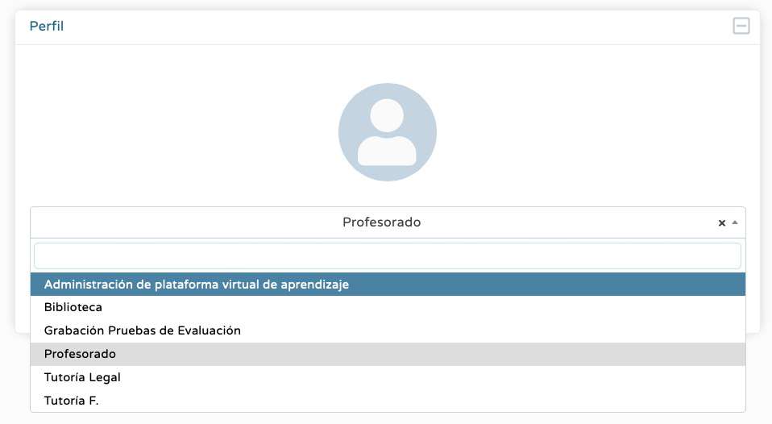
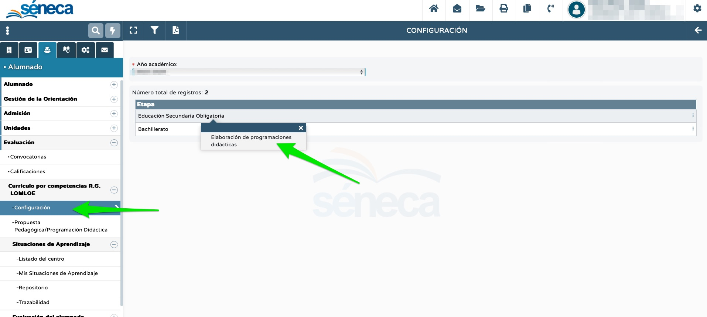
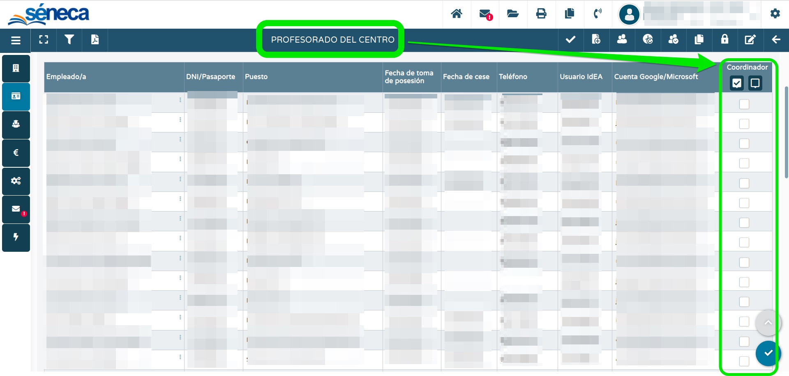

LOS PERMISOS PARA EL ACCESO A LA PROGRAMACIÓN.
El primer paso consiste en la habilitación de los permisos, esto es, dar permiso a las / los docentes que deseemos que puedan elaborar la programación didáctica con Séneca. No hay que confundir los perfiles de Séneca -profesorado, biblioteca, tutor, dirección, etc.- con los permisos para la elaboración de la programación didáctica, pues son cuestiones distintas, se habilitan de forma diferente y sirven para cuestiones dispares.
En la actualidad, existen dos tipos de permisos:

- elaborador de programaciones didácticas: da acceso a la elaboración de la programación didáctica de una o varias áreas o materias de una etapa;
- coordinador: da acceso a la totalidad de las programaciones didácticas de todas las etapas del centro. Además, quien tenga este permiso puede habilitar el de elaborador a otras / os docentes.
Todo el profesorado del centro puede usar el cuaderno sin necesidad de tener ninguno de los permisos anteriores (hace unos años existía el permiso "evaluador", pero se eliminó por operatividad y ya lo posee todo el claustro por defecto). Pero para acceder a la elaboración y al visionado de nuestra programación didáctica sí es necesario tener uno u otro. El equipo directivo en su integridad posee los permisos de coordinador por defecto sin necesidad de hacer nada.
Las pantallas de Séneca en las que se pueden habilitar ambos permisos son estas:
 Pantalla para el permiso "elaborador de programaciones" |
 Pantalla para el permiso "coordinador" |
¿A QUIÉN DEBEMOS DARLE CADA PERMISO?
Es decisión del equipo directivo distribuir los permisos entre el personal del centro para optimizar el funcionamiento del mismo, así que dependerá de la realidad de cada centro educativo concreto. No obstante, generalizando un poco lo ideal sería:
- perfil de elaborador: si queremos que todo el profesorado de un ciclo o departamento colabore y se implique en la elaboración de sus programaciones didácticas es imprescindible que tenga acceso a ellas. Por tanto, daremos este permiso a todo el profesorado del ciclo o departamento; si la elaboración de las programaciones didácticas se va a canalizar por las / los coordinadoras / es de ciclo o las / los jefas / es de departamento, entonces se lo daremos solo a estos últimos;
- perfil de coordinador: solo debe adjudicarse a personas formadas que conozcan el funcionamiento de la herramienta (FEIE, TDE...) Al tener acceso a la totalidad de las programaciones didácticas es muy importante que la persona que lo posea sepa utilizar la herramienta, pues de lo contrario puede generar problemas difíciles de solucionar.
¿CÓMO SE HABILITAN LOS PERMISOS?
El procedimiento para otorgar los permisos es sencillo. Lo vemos en este vídeo: